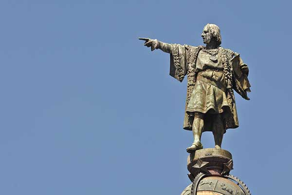

Alessandro Humboldt vạch rõ rằng Colombo nắm được một cách nhanh chóng những hiện tượng tự nhiên. Một lần ở Thế Giới Mới và dưới một bầu trời mới, ông đã nghiên cứu sát sao đất đai và cây cỏ, những thói quen của động vật, những thay đổi của nhiệt độ và từ tính của trái đất. Những điều ghi trong Nhật ký của ông gần như đề cập đến tất cả những vấn đề mà người ta quan tâm đến khoa học cuối thế kỷ XV và đầu thế kỷ XVI. Mặc dù thiếu một sự chuẩn bị vững chắc về lịch sử tự nhiên, bản năng quan sát của Colombo phát triển theo nhiều cách, từ sự tiếp xúc của ông với những hiện tượng vật chất đặc biệt. Từ một người tự học, không được giáo dục chính thức, ông đã trở thành một nhà địa lý vĩ đại.
Colombo là một thiên tài với đầy đủ ý nghĩa của từ này. Không những ông có ý thức về biển cả và tính sắc bén về địa lý học mà còn có lòng tin không thể lay chuyển và lòng mong muốn không giới hạn về sự vinh quang, một ý chí mạnh mẽ và kiên cường, gần tới mức liều lĩnh. Colombo dũng cảm, kiên trì, giàu tưởng tượng, và có một trí nhớ ưu việt. Trong những cuộc khủng hoảng, ông thường sử dụng trực giác của mình và nhiều khả năng để hành động một cách có hiệu quả như chỉ có những thiên tài mới có thể làm được.
Tất cả những điều này giải thích tại sao ông có thể quan niệm một kế hoạch lớn "tới phương Đông bằng cách đi về hướng Tây. Điều này giải thích tại sao ông có thể bỏ gia đình, lợi nhuận cho thành phần chính của giấc mơ của mình, biển cả, trong những năm tốt nhất của đời ông, từ tuổi ba mươi đến bốn mươi hai. Điều này giải thích tại sao ông có thể thực hiện bốn cuộc đi lớn ở Đại Tây Dương: hướng dẫn, chỉ huy, phản đối và có những quyết định kịp thời khi gặp phải sự nổi giận của những hiện tượng tự nhiên và những cuộc nổi loạn của thuộc hạ.
Vững chắc và không thể lay chuyển trong niềm tin và nhận xét của mình, Colombo quan hệ với Vua Bồ Đào Nha, Vua và Hoàng hậu Tây Ban Nha, những người Genova, Firenze và những chủ ngân hàng Do Thái ở tư thế gần như bình đẳng. Ông không tự cao tự đại nhưng biết rõ những công lao của mình, sức mạnh của ý chí mình. Giả thiết nếu Colombo tự cao tự đại, ông đã không giành được tình thân hữu của Cha Antonio de Marchena và Cha Juan Pérez. Nếu ông tự cao tự đại ông đã không có được nhiều bạn bè, những người bảo vệ và những người ca ngợi ông tại triều đình Tây Ban Nha; ông đã không giành được cảm tình và sự tin cậy của Hoàng hậu Isabella, một người phụ nữ thông minh đặc biệt và có đạo đức hiếm có. Nếu ông tự cao tự đại, ông đã không thuyết phục được Martin Alonso Pinzon, viên thuyền trưởng Palenan khôn ngoan, sắc sảo và thành thạo đó, cùng có chung niềm tin và sự vinh quang đối với thành công của chuyến đi biển thứ nhất; thông qua Martin Alonso Pinzon, Colombo đã tuyển hầu hết nhân viên cho chuyến đi biển thứ nhất. Nếu ông tự cao tự đại ông không bao giờ tôn trọng những thủy thủ ngay cả trong những tình hình phiền toái nhất; hầu hết những thủy thủ ấy đều tuân theo ông, ngay cả trong những điều kiện thử thách của tấn bi kịch tại Santa Gloria.
Thành công của Colombo không phải là một sản phẩm của sự may rủi. Ông không phải là nhà đi biển ra đi dể tìm những vùng đất mới mà không biết chính xác những vùng đó ở đâu, như người ta thường hay lặp đi lặp lại. Quả thật, ông đã tìm thấy châu Mỹ trên đường đi, nhưng cũng đúng ông đã phát kiến và nêu ra một ý nghĩ mới, hay một quan điểm mới mà cho tới lúc đó Thế Giới Cũ và những nền văn minh của nó - Hy Lạp - La Mã - Công giáo, Arập - Hồi giáo, Ấn Độ, Trung Quốc và Nhật Bản, đều chưa hề biết.
Phát kiến của Colombo to hơn bất cứ phát kiến hay phát minh nào khác trong lịch sử nhân loại. Trong thế kỷ thứ XVI, người châu Âu đã nhận ra điều đó. Trong những thế kỷ tiếp theo tầm quan trọng của phát kiến của Colombo tiếp tục tăng lên, vì sự phát triển lớn lao của Thế Giới Mới và vì nhiều phát kiến khác bắt nguồn từ đó. Chính sau những chuyến đi của Colombo mà nhiệm vụ hòa nhập những lục địa châu Mỹ vào nền văn hóa Hy Lạp - La Mã - Công Giáo - châu Áu - đã được thực hiện. Dù có những sai lầm, tính ích kỷ và tàn bạo chưa từng thấy, cuộc phát kiến là yếu tố chủ yếu và quyết định nhất về nhiều phương diện trong việc mở ra thời đại mới. Trước hết là những người Tây Ban Nha, rồi người Bồ Đào Nha, người Pháp, người Anh, người Ý, người Ai-rơ-len (Ireland) - và trong chừng mục nhất định, tất cả những dân tộc ở châu Âu đã mang lại yếu tố đó. Nhưng sự thừa nhận này không thể làm giảm giá trị của sự bắt đầu nhiệm vụ đó, cuộc phát kiến của Colombo.
Tuy nhiên, gần như hàng năm cuộc tranh luận về giá trị sự nghiệp của Colombo và về vị trí ưu đẳng của ông lại nổ ra trên báo chí châu Âu và Mỹ. Ai đã đến châu Mỹ trước nhất? Không có một người nào có thể tìm ra tuyến đường Đại Tây Dương trước Colombo hay sao? Những người Bắc Âu đã không tới Greenland và Canada hay sao? Đó là một cuộc tranh luận hoàn toàn không được chứng minh là đúng theo quan điểm khoa học. Vấn đề không phải là cuộc thi đấu thể thao mà là sự xem xét lịch sử. Vấn đề không phải ai là người châu Âu đầu tiên đặt chân lên một bờ biển nào đó trên đại lục châu Mỹ, mà ai là người đưa lục địa mới một cách bất ngờ và ồ ạt vào sự phát triển của nền văn minh, tạo ra bước ngoặt trong lịch sử nhân loại.
Những con người đầu tiên có lẽ đã tới đất Mỹ qua eo đất Bering vào đầu kỷ nguyên đồ đá cũ, cách ngày nay khoảng hai mươi đến hai mươi nhăm nghìn năm. Khi Cristoforo Colombo đổ bộ lên đảo San Salvador trong quần đảo Bahamas, mấy triệu người đã sống tại những lục địa châu Mỹ, từ miền cực Bắc đến miền cực Nam. Dân cư đó đã xác lập vững chắc, vì những nền văn minh lớn đã phát triển trong nhiều thế kỷ trên những lãnh thổ rộng lớn, trong khi những nền văn minh khác cùng một tầm vóc đã suy sụp hay đang tan rã.
Như thế, những cuộc thảo luận ai là người đầu tiên đến châu Mỹ là hời hợt và khó lòng có tính chất khoa học. Không phải là một người mà hàng triệu, hàng triệu người đã đến, hay hơn thế đã có dòng dõi từ nhiều cặp vợ chồng đã đến trong thiên niên kỷ trước năm 1492. Vấn đề duy nhất nghiêm túc là có nhà hàng hải nào từ nền văn minh Hy-Lạp - Công giáo, hoặc từ những nền văn hóa Trung Đông đã đến đây trước Colombo hay không. Nhưng những cuộc tiếp xúc bất ngờ giữa những người châu Âu, những người châu Phi, hay những người châu Á đơn lẻ với Thế Giới Mới không thể ảnh hưởng và chắc chắn không làm giảm giá trị phát kiến của Colombo. Những công cuộc chắc chắn gây ấn tượng và dẫn tới cuộc phát kiến đã bị lãng quên của người Bắc Âu cũng không ảnh hưởng đến giá trị ấy. Ở đây chúng ta gặp phải những thực tế lịch sử không thể nghi ngờ. Nhưng ngay cả những thực tế lịch sử này cũng bảo đảm cho chúng ta rằng không có một người Bắc Âu nào đã đi tới những vùng đất lạnh giá ở Labrador, hay tới Nuova Scozia và Massachusets thừa nhận rằng ông mình đã tìm thấy một thế giới mới, hay làm cho châu Âu - và cùng với châu Âu, phần còn lại của Thế Giới Cũ - biết về Thế Giới Mới đó. Tương tụ như vậy, không một ai ở Thế Giới Cũ đối diện với Thái Bình Dương hoặc Ấn Độ Dương, không một người nào trong những nền văn minh phương Đông của Trung Quốc và Ấn Độ, biết gì về sự tồn tại của Thế Giới Mới.
Những công cuộc đáng nhớ nhất của người Bắc Âu ở miền Tây-Bắc Đại Tây Dương không có tác động lâu dài đối với lịch sử của nhân loại. Đại lục châu Mỹ vẫn còn gói ghém trong sự huyền bí. Bức màn bí mật này chỉ bị xé tan nhờ thiên tài, sự kiên cường và lòng tin của Cristoforo Colombo. Và như vậy Colombo, và chỉ một mình Colombo, thực sự là "người mở rộng thế giới" như Claudel đã nói. Colombo đã phát minh ra ý nghĩ và đưa ý nghĩ đó đến kết quả.
Colombo đã tiết lộ cho Thế Giới Cũ hai điều lớn. Điều tiết lộ thứ nhất đã được một số học giả thấy trước và một số thủy thủ chờ đợi, nhưng không một ai có can đảm xác minh điều đó: Bên kia Đại Dương không phải là vực thẳm mà là một lục địa nữa. Colombo đã đổ bộ lên đó ngày 12 tháng 10 năm 1492, bắt đầu một Kỷ nguyên mới. Sự tiết lộ khác, hoang đường và thần kỳ cho đến lúc bấy giờ, khi Colombo đến cửa một con sông rộng mênh mông, sông Orinoco. Chiều tối hôm đó, 15 tháng 8 năm 1498, ông đã viết trong Nhật ký: "Tôi nghĩ rằng đây là một đại lục rộng lớn, từ trước đến nay không ai biết". Mấy năm sau ông viết: "Bệ hạ là chủ của những vùng đất rộng lớn này, những vùng đó là một thế giới khác nữa". "Một thế giới khác, một thế giới mới": Chỉ với công cuộc của Colombo, châu Âu, đạo Hồi, Ấn Độ, Trung Quốc và Nhật Bản mới được biết sự tồn tại của một Thế Giới Mới. Và điều đó đã làm thay đổi tiến trình của lịch sử nhân loại một cách sâu sắc.
Lịch sử nhân loại sẽ như thế nào nếu không có cuộc phát kiến vĩ đại năm đó? Câu hỏi này vô bổ, vì không một lịch sử có giá trị nào dựa trên những giả thuyết nếu. Điều đó cũng ngu xuẩn vì không nghi ngờ gì nữa là nếu Colombo không thực hiện kế hoạch kỳ lạ của mình năm 1492 thì một nhà hàng hải nào khác từ thế giới Công giáo bị cuốn hút vào con sốt đi biển và khảo sát của những thập kỷ cuối thế kỷ XV và đầu thế kỷ XVI, sẽ tiết lộ cho Thế Giới Cũ sự tồn tại của Thế Giới Mới.
Vậy còn lại ba thực tế vững chắc:
1. Chính do thiên tài của mình Cristoforo Colombo đã hình thành trong tâm trí mình kế hoạch vượt "Biển Đen Tối", mở đường cho việc mở rộng thế giới.
2. Chính là do một sự trùng hợp mà Genova - Genova của Vivaldi, của Lanzarotto Maroncello, Antoniotto da Noli, và Nicoloso da Recco, Genova của hàng nghìn nhà vẽ bản đồ của các đội thuyền thắng lợi tại những biển Tirreno, Adriatico, Crociate, Egeo và Hắc Hải - đã sinh ra con người mà thế giới thừa nhận là nhà đi biển ưu tú, một trong hai thủy thủ vĩ đại nhất của tất cả các thời đại (người kia là Cook).
3. Colombo không phải là thiên tài đơn dộc ở nước Ý thế kỷ XV. Thật vậy, lúc này nước Ý chưa phải là một quốc gia; nước Ý chưa đạt được sự thống nhất về chính trị. Nước Ý cũng chưa đạt được sự thống nhất về ngôn ngữ. Chúng ta đã biết khi Colombo rời Liguria, ông biết tiếng Genova và một số yếu tố về tiếng La-tinh của thời này. Ông học tiếng Ý, tức là tiếng Toscana tại Tây Ban Nha trong khi thảo luận những kế hoạch của ông với Đức ông Geraldini người Umbria, và tổ chức những cuộc đi biển của ông với Berardi, Vespucci và những người Firenze khác. Nước Ý chưa có một tiếng nói thống nhất, nhưng nước này đã có một ngôn ngữ văn học thống nhất, từ Veneto tới Sicilia, từ Puglia tới Liguria, từ Calabria tới Ticino, ngày nay là một quận của Thụy Sĩ.
Đã có một nền văn hóa Ý. Và Colombo không phải là một sản phẩm cô lập của nền văn hóa Ý thế kỷ thứ XV mà Genova là một bộ phận chủ chốt. Cristoforo Colombo thuộc Genova là người hành động vĩ đại nhất và điệu kỳ nhất của đầu thời cận đại. Bên cạnh ông, mở rộng những biên giới của địa lý, triết học, chính trị, khoa học, nghệ thuật và âm nhạc là cả một đội ngũ thiên tài nước Ý, những người đương thời với ông. Colombo sinh khoảng năm 1451: Botticelli sinh trước đó sáu năm; Lozenro de Medici và Ghirlandaio sinh trước đó hai năm; Leonardo da Vinci và Savonarola sinh sau đó một năm; Giuliano de Medici sinh sau đó hai năm; Amerigo Vespucci, Pinturicchio và Poliziano sinh sau đó ba năm. Trong khi Colombo đang thu hoạch những kinh nghiệm đầu tiên về đi biển tại những biển Liguria và Tirreno thì đã lần lượt ra đời: Pico della MỊrandola (1463), Machiavelli (1469). Trong khi Colombo đang hình thành trong tâm trí ông ý nghĩ đi tới phương Đông băng đường phương Tây thì đã lần lượt ra đời: Ariosto (1474), Michelangelo (1475), Tiziano (1477) và Rattaello (1483). Khi Colombo đang đến San Salvador (1492) thì Pier della Francesca chết. Khi Colombo đang tìm eo biển để đi vòng trái đất thì Benvenuto Cellini ra đời (1500). Năm Colombo chết, Mantegna cũng chết. Một vài năm sau Pier Luigi da Palestrina ra đời, ông này đã mở những biên giới đi vào những không gian mới của âm nhạc.
Nếu những danh nhân này bị gạt ra khỏi lịch sử thì thời kỳ Phục hưng ở nước ý sẽ biến đi. Không có thời kỳ Phục hưng ở nước Ý sẽ không có thời Hiện đại. Cristoforo Colombo tượng trưng cho thiên tài sáng tạo của nước Ý đã hình thành nên buổi đầu của thời Hiện đại.
GHI CHÚ VỀ VIỆC DỊCH.
1. Cuốn sách này dịch theo bản tiếng Anh "Columbus, The Great Adventure" của Nhà xuất bản Orion Books, New York, 1991, do Luciano F.Farina và Marc A.Beckvvith dịch từ nguyên bản tiếng Ý "La meravigliosa avventura di Cristoforo Colombo" của Paolo Emilio Taviani, do Istituto Geografido de Agostini in tại Novara (Italia) năm 1989.
. Giữa hai bản có sự sai khác chút ít. Gặp trường hợp có chỗ khó hiểu, chúng tôi đối chiếu và dựa theo bản tiếng Ý.
2. Các tên người, tên đất trong cuốn sách nàỵ, nếu thuộc về đất nước Italia, thì viết theo tiếng Ý, mà không theo biến thể của từ đó trong tiếng Anh.
Chẳng hạn:
Viết Genova, chứ không viết Genoa.
Viết Venezia, chứ không viết Venice.
Viết Firenz chứ không viết Florence.
Viết Napoli, chứ không viết Naples.
3. Các tên riêng trong tập sách này (trừ ở bìa sách) được giữ nguyên dạng tiếng nước ngoài, và có phiên âm kèm bên khi từ đó xuất hiện lần đầu tiên. Chúng tôi nghĩ rằng sử lý như vậy sẽ tiện lợi hơn cho các bạn đọc trong việc đối chiếu với các tài liệu khác.
4. Các chú thích của tác giả được ghi chú (T.G), các chú thích không có ghi chú là của người dịch.
Dù đã hết sức cố gắng nhưng bản dịch chắc chắn còn nhiều thiếu sót, chúng tôi mong được sự chỉ giáo của bạn đọc. Xin trân trọng cám ơn trước.

.Một bức tượng Colombo ở tỉnh Barcelone (Tây Ban Nha)